、 、
很多机器学习的问题都会涉及到有着几千甚至数百万维的特征的训练实例
幸运的是
警告
降维肯定会丢失一些信息 ： 这就好比将一个图片压缩成 JPEG 的格式会降低图像的质量 （ ） 因此即使这种方法可以加快训练的速度 ， 同时也会让你的系统表现的稍微差一点 ， 降维会让你的工作流水线更复杂因而更难维护 。 所有你应该先尝试使用原始的数据来训练 。 如果训练速度太慢的话再考虑使用降维 ， 在某些情况下 。 降低训练集数据的维度可能会筛选掉一些噪音和不必要的细节 ， 这可能会让你的结果比降维之前更好 ， 这种情况通常不会发生 （ 它只会加快你训练的速度 ； ） 。
降维除了可以加快训练速度外
在这一章里
维数灾难
我们已经习惯生活在一个三维的世界里
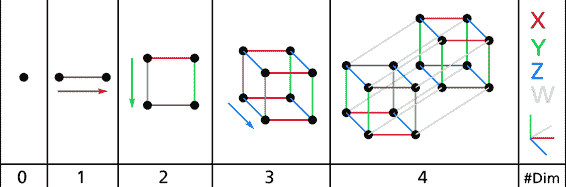
图 8-1 点
这表明很多物体在高维空间表现的十分不同1×1的正方形1 - 0.998^21×1×...×1的立方体
还有一个更麻烦的区别√(1,000,000/6)
理论上来说
降维的主要方法
在我们深入研究具体的降维算法之前
（ ） （ ）
在大多数现实生活的问题中
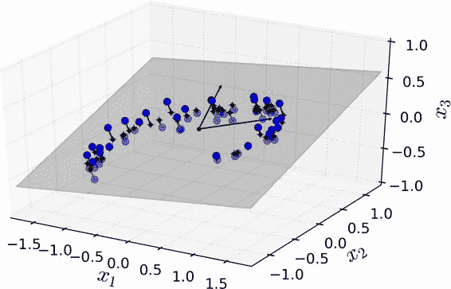
图 8-2 一个分布接近于 2D 子空间的 3D 数据集
注意到所有训练实例的分布都贴近一个平面z1和z2
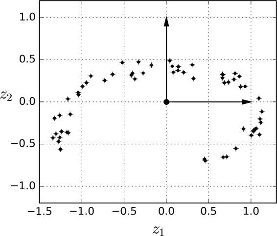
图 8-3 一个经过投影后的新的 2D 数据集
但是
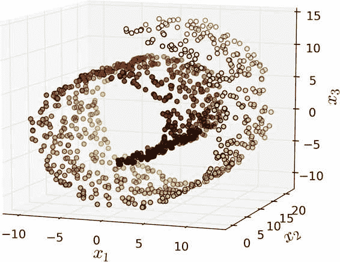
图 8-4 瑞士滚动数玩具数据集
简单地将数据集投射到一个平面上x3
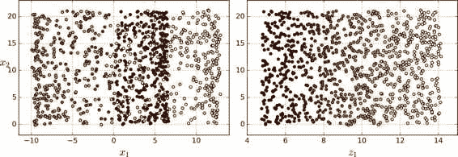
图 8-5 投射到平面的压缩
流形学习
瑞士卷一个是二维流形的例子d维流形是类似于d维超平面的n维空间d < nd = 2n = 3
许多降维算法通过对训练实例所在的流形进行建模从而达到降维目的
让我们再回到 MNIST 数据集
流形假设通常包含着另一个隐含的假设
但是x1 = 5
简而言之
希望你现在对于维数爆炸以及降维算法如何解决这个问题有了一定的理解
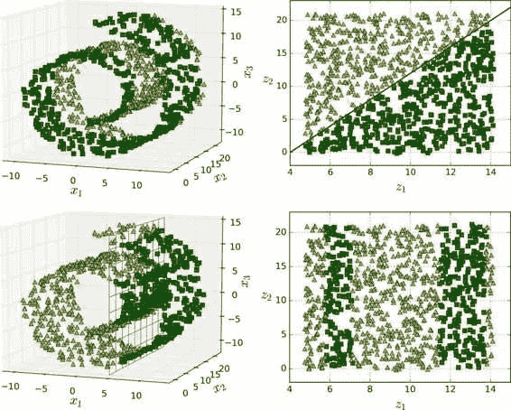
图 8-6 决策边界并不总是会在低维空间中变的简单
（ ） （ ）
主成分分析
（ ） （ ）
在将训练集投影到较低维超平面之前
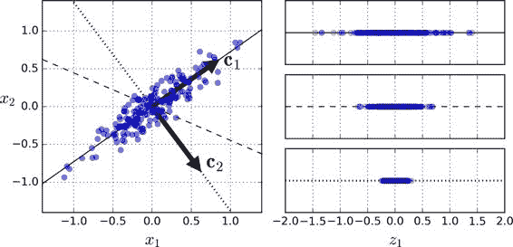
图 8-7 选择投射到哪一个子空间
选择保持最大方差的轴看起来是合理的
（ ） （ ）
PCA 寻找训练集中可获得最大方差的轴
定义第i个轴的单位向量被称为第i个主成分c1c2
概述
主成分的方向不稳定 ： 如果您稍微打乱一下训练集并再次运行 PCA ： 则某些新 PC 可能会指向与原始 PC 方向相反 ， 但是 。 它们通常仍位于同一轴线上 ， 在某些情况下 。 一对 PC 甚至可能会旋转或交换 ， 但它们定义的平面通常保持不变 ， 。
那么如何找到训练集的主成分呢X分解为三个矩阵U·Σ·V^T的点积V^T包含我们想要的所有主成分
公式 8-1 主成分矩阵
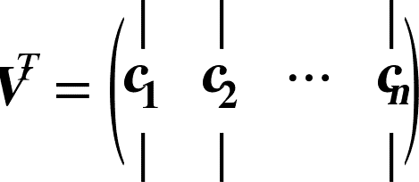
下面的 Python 代码使用了 Numpy 提供的svd()函数获得训练集的所有主成分
X_centered=X-X.mean(axis=0)
U,s,V=np.linalg.svd(X_centered)
c1=V.T[:,0]
c2=V.T[:,1]
警告
PCA 假定数据集以原点为中心 ： 正如我们将看到的 。 Scikit-Learn 的 ， PCA类负责为您的数据集中心化处理但是 。 如果您自己实现 PCA ， 如前面的示例所示 （ ） 或者如果您使用其他库 ， 不要忘记首先要先对数据做中心化处理 ， 。
投影到d维空间
一旦确定了所有的主成分d个主成分构成的超平面上d维
为了将训练集投影到超平面上X和Wd的点积Wd定义为包含前d个主成分的矩阵V^T的前d列组成的矩阵
公式 8-2 将训练集投影到d维空间
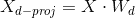
下面的 Python 代码将训练集投影到由前两个主成分定义的超平面上
W2=V.T[:,:2]
X2D=X_centered.dot(W2)
好了你已经知道这个东西了
使用 Scikit-Learn
Scikit-Learn 的 PCA 类使用 SVD 分解来实现
from sklearn.decomposition import PCA
pca=PCA(n_components=2)
X2D=pca.fit_transform(X)
将 PCA 转化器应用于数据集后components_访问每一个主成分pca.components_.T[:,0]
（ ） （ ）
另一个非常有用的信息是每个主成分的方差解释率explained_variance_ratio_变量获得
>>> print(pca.explained_variance_ratio_)
array([0.84248607, 0.14631839])
这表明
选择正确的维度
通常我们倾向于选择加起来到方差解释率能够达到足够占比
下面的代码在不降维的情况下进行 PCA
pca=PCA()
pac.fit(X)
cumsum=np.cumsum(pca.explained_variance_ratio_)
d=np.argmax(cumsum>=0.95)+1
你可以设置n_components = d并再次运行 PCAn_components设置为 0.0 到 1.0 之间的浮点数
pca=PCA(n_components=0.95)
X_reduced=pca.fit_transform(X)
另一种选择是画出方差解释率关于维数的函数cumsum
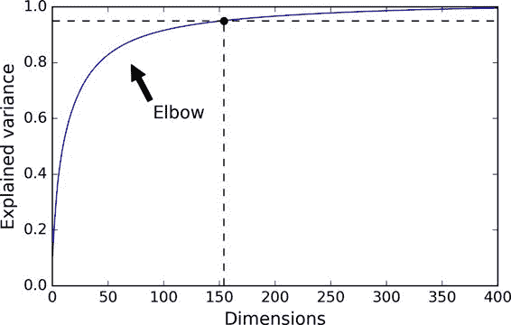
图 8-8 可解释方差关于维数的函数
PCA 压缩
显然
通过应用 PCA 投影的逆变换inverse_transform()方法将其解压缩回 784 维
pca=PCA(n_components=154)
X_mnist_reduced=pca.fit_transform(X_mnist)
X_mnist_recovered=pca.inverse_transform(X_mnist_reduced)
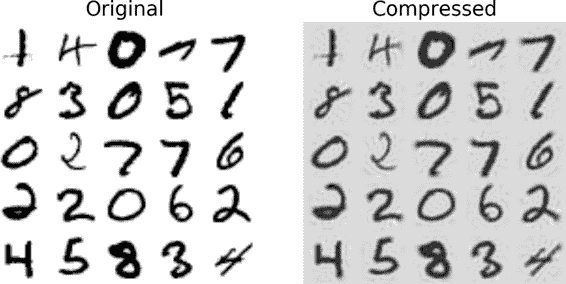
图 8-9 MNIST 保留 95 方差的压缩
逆变换的公式如公式 8-3 所示
公式 8-3 PCA 逆变换
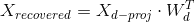
（ ） （ ）
先前 PCA 实现的一个问题是它需要在内存中处理整个训练集以便 SVD 算法运行
下面的代码将 MNIST 数据集分成 100 个小批量array_split()函数IncrementalPCA类partial_fit()方法fit()方法
from sklearn.decomposition import IncrementalPCA
n_batches=100
inc_pca=IncrementalPCA(n_components=154)
for X_batch in np.array_spplit(X_mnist,n_batches):
inc_pca.partial_fit(X_batch)
X_mnist_reduced=inc_pca.transform(X_mnist)
或者memmap类fit()方法
X_mm=np.memmap(filename,dtype='float32',mode='readonly',shape=(m,n))
batch_size=m//n_batches
inc_pca=IncrementalPCA(n_components=154,batch_size=batch_size)
inc_pca.fit(X_mm)
（ ） （ ）
Scikit-Learn 提供了另一种执行 PCA 的选择d个主成分的近似值O(m × d^2) + O(d^3)O(m × n^2) + O(n^3)d远小于n时
rnd_pca=PCA(n_components=154,svd_solver='randomized')
X_reduced=rnd_pca.fit_transform(X_mnist)
（ ） （ ）
在第 5 章中
事实证明
例如KernelPCA类来执行带有 RBF 核的 kPCA
from sklearn.decomposition import KernelPCA
rbf_pca=KernelPCA(n_components=2,kernel='rbf',gamma=0.04)
X_reduced=rbf_pca.fit_transform(X)
图 8-10 展示了使用线性核
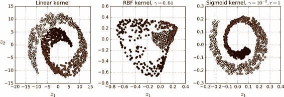
图 8-10 使用不同核的 kPCA 将瑞士卷降到 2 维
选择一种核并调整超参数
由于 kPCA 是无监督学习算法Grid SearchCV为 kPCA 找到最佳的核和gamma值
from sklearn.model_selection import GridSearchCV
from sklearn.linear_model import LogisticRegression
from sklearn.pipeline import Pipeline
clf = Pipeline([
("kpca", KernelPCA(n_components=2)),
("log_reg", LogisticRegression())
])
param_grid = [{
"kpca__gamma": np.linspace(0.03, 0.05, 10),
"kpca__kernel": ["rbf", "sigmoid"]
}]
grid_search = GridSearchCV(clf, param_grid, cv=3)
grid_search.fit(X, y)
你可以通过调用best_params_变量来查看使模型效果最好的核和超参数
>>> print(grid_search.best_params_)
{'kpca__gamma': 0.043333333333333335, 'kpca__kernel': 'rbf'}
另一种完全为非监督的方法φ将训练集映射到无限维特征空间x表示的那样
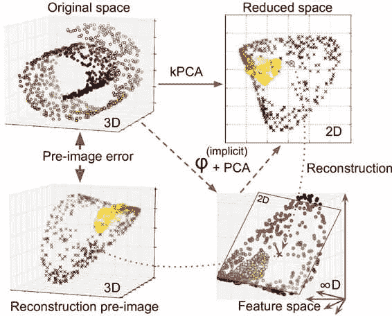
图 8-11 核 PCA 和重建前图像误差
您可能想知道如何进行这种重建fit_inverse_transform = True
rbf_pca = KernelPCA(n_components = 2, kernel="rbf", gamma=0.0433,fit_inverse_transform=True)
X_reduced = rbf_pca.fit_transform(X)
X_preimage = rbf_pca.inverse_transform(X_reduced)
概述
默认条件下 ： ， fit_inverse_transform = False并且KernelPCA没有inverse_tranfrom()方法这种方法仅仅当 。 fit_inverse_transform = True的情况下才会创建。
你可以计算重建前图像误差
>>> from sklearn.metrics import mean_squared_error
>>> mean_squared_error(X, X_preimage) 32.786308795766132
现在你可以使用交叉验证的方格搜索来寻找可以最小化重建前图像误差的核方法和超参数
LLE
局部线性嵌入
例如LocallyLinearEmbedding类来展开瑞士卷
from sklearn.manifold import LocallyLinearEmbedding
lle=LocallyLinearEmbedding(n_components=2,n_neighbors=10)
X_reduced=lle.fit_transform(X)
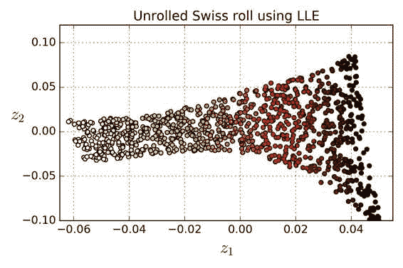
图 8-12 使用 LLE 展开瑞士卷
这是 LLE 的工作原理x^(i)k个邻居k = 10中x^(i)重构为这些邻居的线性函数w[i, j]从而使x^(i)和Σ w[i, j] x^(j), j = 1 -> m之间的平方距离尽可能的小x^(j)不是x^(i)的k个最近邻时w[i, j] = 0W是包含所有权重w[i, j]的权重矩阵x^(i)的权重进行归一化
公式 8-2 LLE 第一步
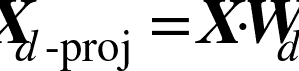
在这步之后W_hatw_hat[i,j]对训练实例的线形关系进行编码d维空间d < nz^(i)是x^(i)在这个d维空间的图像z^(i)和Σ w_hat[i, j] z^(j), j = 1 -> m之间的平方距离尽可能的小Z是包含所有z^(i)的矩阵
公式 8-3 LLE 第二步
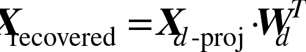
Scikit-Learn 的 LLE 实现具有如下的计算复杂度k个最近邻为O(m log(m) n log(k))O(m n k^3)O(d m^2)m^2使得这个算法在处理大数据集的时候表现较差
其他降维方法
还有很多其他的降维方法
- 多维缩放
（ ） （ ） - Isomap 通过将每个实例连接到最近的邻居来创建图形
， 。 - t-分布随机邻域嵌入
（ ， ） ， 。 ， （ ， ） 。 - 线性判别分析
（ ， ） ， ， ， 。 ， （ ） ， 。
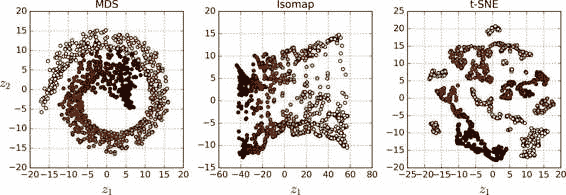
图 8-13 使用不同的技术将瑞士卷降维至 2D
练习
- 减少数据集维度的主要动机是什么
？ ？ - 什么是维度爆炸
？ - 一旦对某数据集降维
， ？ ， ？ ， ？ - PCA 可以用于降低一个高度非线性对数据集吗
？ - 假设你对一个 1000 维的数据集应用 PCA
， ， ？ - 在什么情况下你会使用普通的 PCA
， ， ？ - 你该如何评价你的降维算法在你数据集上的表现
？ - 将两个不同的降维算法串联使用有意义吗
？ - 加载 MNIST 数据集
（ ） ， （ ， ） 。 ， ， 。 ， ， 。 ， 。 ？ ： ？ - 使用 t-SNE 将 MNIST 数据集缩减到二维
， 。 。 ， ， （ ， ， ） 。 。 ， ， ， 。
练习答案请见附录 A